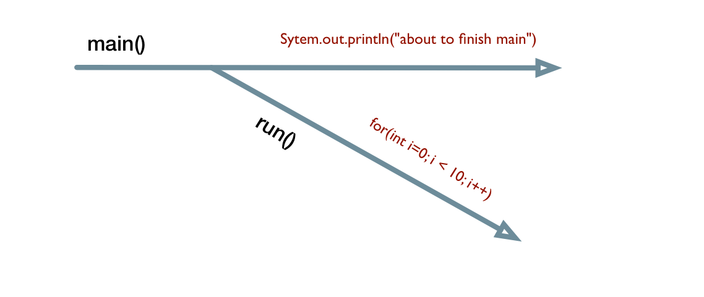

Threads
When you call someone over the phone, you can’t talk right away because the line is still ringing. You need to wait for the other person to pick up, you will then say hello, introduce yourself then the conversation can begin. The steps that are necessary to complete a phone call are carried out in a very serial way. Before the last step can begin, the step before that needs to complete first, so is the step before that and the step before it etc. Everything is in the critical path. If we wrote programs this way, we’d be in trouble.
Imagine that we have to write a program that accepts input from a user, that input will be used as a key to look up a value in a remote database. If we will write this program in a serial way, it is likely that the users of the program will complain at some point when the program becomes non-responsive. A database operation can take a long time especially if it is on a remote location.
REWORD When the user submits his query, our program will wait until the database completes its action before it can return control to our user interface. If
If the database query takes a long time to complete, and this is commonplace, the user interface will freeze because it is waiting for the database operation to return the control. END REWORD
When an action has to wait for some other action to complete before it can begin, that other action is referred to as a blocking operation because it prevents the action that comes after it from starting.
Consider the email workflow as a contrast to the telephone workflow. The send, receive, reply action between the two parties does not have any blocking restrictions. You can send the email and you don’t need to wait for it to be received, you can go about doing other things with your time. The send, receive and reply actions on the email are non-blocking. The email workflow might be a bad model to illustrate the non-blocking concept, but it gets the point across. The sender is free to do other things once the message has been sent.
Java programs can be written in a non-blocking way by using Thread objects. The general idea is to group all the statements you don’t want to run independently, in a non-blocking way, inside a Thread object and let it run independently.
main is a single thread

Things to discuss
asynchrony and concurrency telephone, and email receptionist boss and delegation, or a clone of myself. I will hand over a post-it note to my clone and let him do the tasks. That’s it.
key thing is not to block, I need to explain the concept of blocking
class Test extends Thread {
public static void main (String[] args) {
Test t = new Test();
t.start();
System.out.println("About to finish main");
}
public void run() {
for (int i=0; i < 10 ; i++ )
System.out.println("i = " +i);
}
}
Glossary
- Blocking operation
- Non-blocking operation
- Concurrent
- Asynchronous